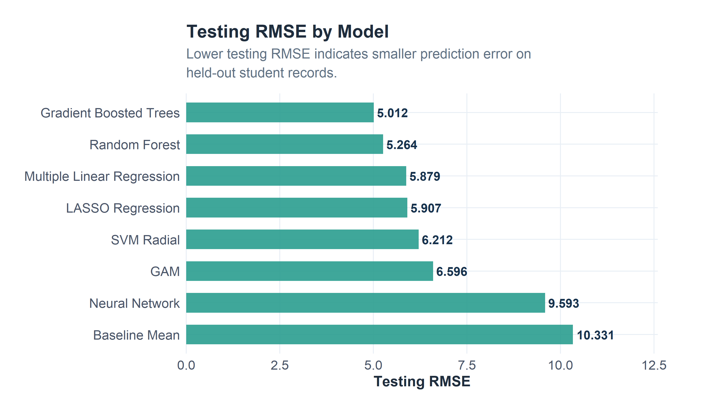
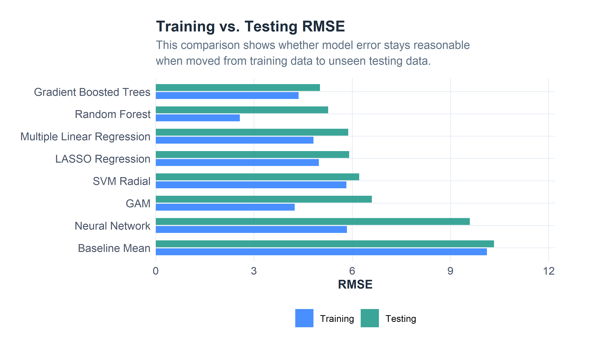
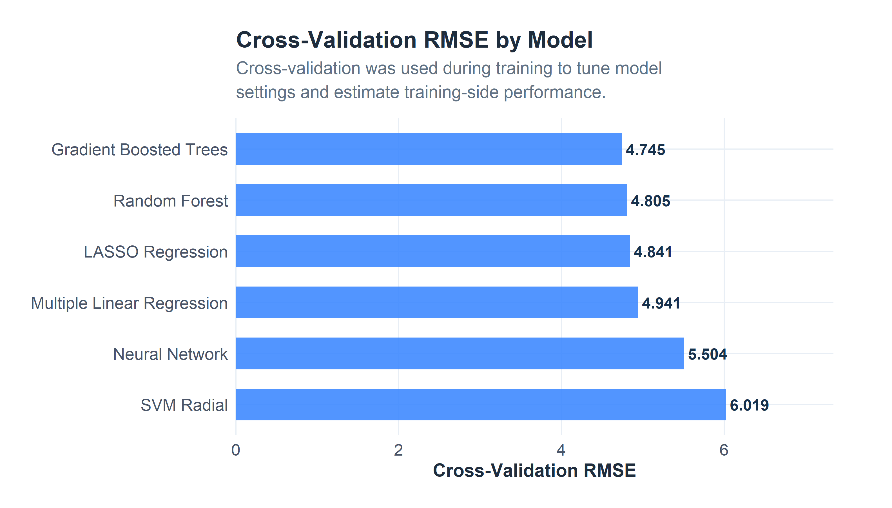
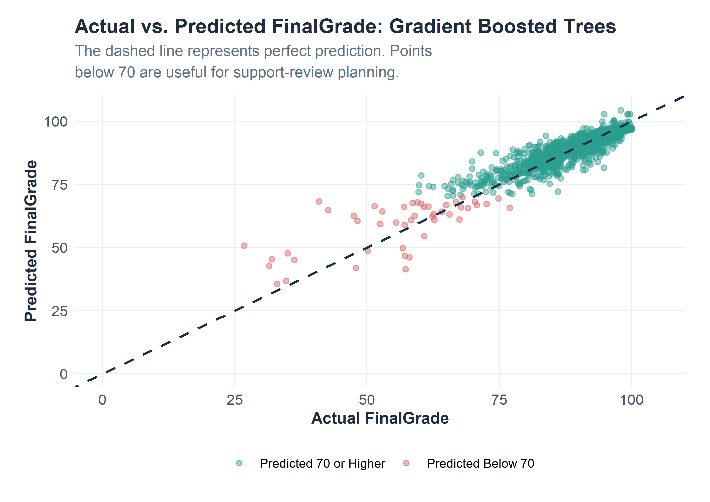
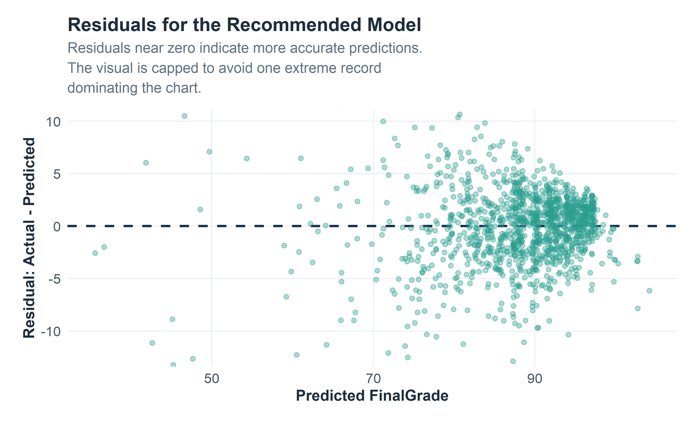
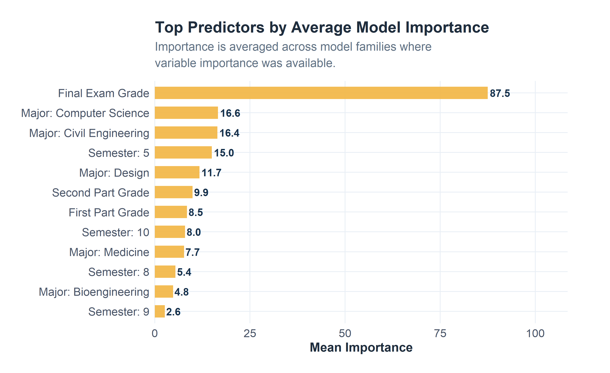

Model Results & Comparison
This page compares the trained models using cross-validation results, holdout testing performance, train/test error gaps, selected hyperparameters, variable importance, and final model ranking.
Page Overview
1. Best Model Summary
Gradient Boosted Trees
This model produced the lowest testing RMSE among the models evaluated on the held-out test set.
The recommended model is selected primarily by testing RMSE because RMSE penalizes larger prediction errors. R-squared and MAE are included to provide additional context for explanatory strength and average grade-point error.
2. Model Ranking
| Rank | Model | Recommendation Role | Training RMSE | Testing RMSE | RMSE Gap | Testing R-Squared | Testing MAE |
|---|---|---|---|---|---|---|---|
| 1 | Gradient Boosted Trees | Recommended final model | 4.360 | 5.012 | 0.652 | 0.765 | 2.826 |
| 2 | Random Forest | Secondary comparison | 2.568 | 5.264 | 2.695 | 0.740 | 2.886 |
| 3 | Multiple Linear Regression | Secondary comparison | 4.815 | 5.879 | 1.064 | 0.676 | 2.815 |
| 4 | LASSO Regression | Secondary comparison | 4.981 | 5.907 | 0.926 | 0.673 | 3.051 |
| 5 | SVM Radial | Secondary comparison | 5.821 | 6.212 | 0.391 | 0.638 | 3.386 |
| 6 | GAM | Secondary comparison | 4.240 | 6.596 | 2.356 | 0.592 | 2.616 |
| 7 | Neural Network | Secondary comparison | 5.835 | 9.593 | 3.758 | 0.138 | 4.151 |
| 8 | Baseline Mean | Reference only | 10.111 | 10.331 | 0.220 | 0.000 | 7.055 |

3. Train/Test Error Gap
A strong testing result is more useful when it is reasonably close to training performance. Large train/test gaps can indicate overfitting, especially when training error is much lower than testing error.

4. Cross-Validation Results
Cross-validation estimates model performance during training. It is useful for tuning and model comparison before the held-out testing set is used.
| Model | RMSE | R-Squared | MAE |
|---|---|---|---|
| Gradient Boosted Trees | 4.745 | 0.779 | 2.829 |
| Random Forest | 4.805 | 0.779 | 2.888 |
| LASSO Regression | 4.841 | 0.770 | 2.914 |
| Multiple Linear Regression | 4.941 | 0.762 | 2.752 |
| Neural Network | 5.504 | 0.705 | 3.128 |
| SVM Radial | 6.019 | 0.676 | 3.456 |

5. Selected Hyperparameters
| Model | Selected Settings |
|---|---|
| Baseline Mean | Training-set mean FinalGrade |
| Multiple Linear Regression | intercept = TRUE |
| LASSO Regression | alpha = 1; lambda = 0.372759372031494 |
| GAM | mgcv::gam with REML smoothing |
| Random Forest | mtry = 8; splitrule = 1; min.node.size = 5 |
| Gradient Boosted Trees | n.trees = 200; interaction.depth = 3; shrinkage = 0.05; n.minobsinnode = 10 |
| SVM Radial | sigma = 0.005; C = 1 |
| Neural Network | size = 5; decay = 0.01 |
The selected settings were produced during the modeling workflow. GAM
is listed separately because it was fit directly with
mgcv::gam() rather than through
caret::train().
6. Actual vs. Predicted Results
The plot below compares the best model’s predictions against actual FinalGrade values in the testing set. Points closer to the diagonal line represent more accurate predictions.

| Metric | Value |
|---|---|
| Median Absolute Error | 2.049 |
| Mean Absolute Error | 2.826 |
| Error 75th Percentile | 3.531 |
| Error 90th Percentile | 5.804 |
7. Residual Review
Residuals show how far predictions are from the actual final grade. A residual near zero means the prediction was close. A wider spread means the model is less consistent for some students. Extreme residuals are capped in the visual so the main pattern remains readable.

8. Variable Importance
Variable importance helps explain which predictors the model families relied on most. Because different algorithms calculate importance differently, the table below uses an aggregate view across the models where importance was available.
| Aggregate Rank | Variable | Models Available | Mean Rank | Mean Importance | Best Rank |
|---|---|---|---|---|---|
| 1 | Final Exam Grade | 5 | 2.8 | 87.514 | 1 |
| 2 | Major: Medicine | 5 | 8.6 | 7.688 | 2 |
| 3 | Major: Computer Science | 5 | 8.8 | 16.615 | 3 |
| 4 | Major: Civil Engineering | 5 | 9.8 | 16.427 | 4 |
| 5 | Semester: 10 | 5 | 12.4 | 7.958 | 6 |
| 6 | Major: Design | 5 | 16.0 | 11.733 | 6 |
| 7 | Semester: 5 | 5 | 16.2 | 15.000 | 5 |
| 8 | First Part Grade | 5 | 16.4 | 8.474 | 3 |
| 9 | Semester: 8 | 5 | 17.6 | 5.432 | 10 |
| 10 | Second Part Grade | 5 | 17.8 | 9.939 | 2 |
| 11 | Semester: 9 | 5 | 18.4 | 2.609 | 11 |
| 12 | Major: Bioengineering | 5 | 21.0 | 4.801 | 14 |
| 13 | Semester: 4 | 5 | 21.4 | 1.493 | 6 |
| 14 | Major: Graphic Design | 5 | 21.6 | 3.486 | 9 |
| 15 | Semester: 6 | 5 | 22.2 | 2.031 | 5 |

Interpretation: Grade-related predictors are expected to rank highly because the outcome is final course performance. Attendance, financial, and support-service variables are still useful because they connect predictions to possible student-support actions.
9. Recommendation
The best model by testing RMSE is Gradient Boosted Trees. It provides the strongest holdout performance in this workflow. However, model selection should not rely on one metric alone. A practical recommendation should also consider train/test stability, interpretability, and whether the model can be explained to advisors or student-success staff.
| Question | Recommendation |
|---|---|
| Which model had the lowest testing error? | Gradient Boosted Trees |
| Which metric drove the main ranking? | Testing RMSE |
| Why include MAE? | MAE is easier to explain as average grade-point error. |
| Why compare train and test performance? | Large gaps can indicate overfitting. |
| Why review variable importance? | It helps connect prediction performance to practical support decisions. |
| What should happen before production use? | Validate the model on newer terms, review anomalies, and align interventions with advising policy. |
Recommended Model
Gradient Boosted Trees produced the lowest testing RMSE in the saved modeling workflow.
Model Stability
Train/test error gaps help identify whether a model is likely overfitting or generalizing reasonably well.
Practical Use
Predicted grades can be translated into support-review segments for advising, tutoring, and follow-up.